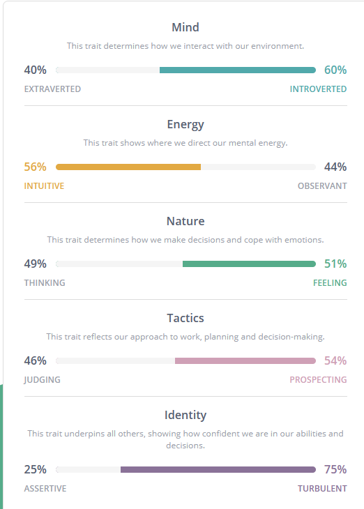

Personal Profile
Myers Briggs Test - Mediator
Learning style – Visual
Open Colleges Career quiz – Logistician ISTJ
What do the results of these tests mean for you?

For me, these tests have confirmed a lot of what I thought was true about myself, I tend to think things through logically and analyse all the possible results of a situation.
I always try to be honest with others even when it may hurt their feelings if I think it will be beneficial for them. I don’t consider myself much of a leader as I lack confidence,
but I try to speak up when I think something is wrong and I will always do my best to lead others in the right direction.
How do you think these results may influence your behaviour in a team?
 When I am working in a team, I tend to be very reserved, until there is a problem or some action needs to be taken. In some situations this can be advantageous, such as when the
workflow is moving fluidly I tend not to get in the way or cause distractions, but it can also lead to me not putting in my two cents when perhaps I should.
When I am working in a team, I tend to be very reserved, until there is a problem or some action needs to be taken. In some situations this can be advantageous, such as when the
workflow is moving fluidly I tend not to get in the way or cause distractions, but it can also lead to me not putting in my two cents when perhaps I should.
How should you take this into account when forming a team?
 I tend to work well in a team with a few natural leaders, as I tend to stay quiet unless needed and I don’t usually feel confident telling others what to do.
When I feel comfortable I will talk to the leaders about things that I think could be done better but for the most part I tend to put my head down and do what needs
to be done, and maybe try to help anyone who is struggling.
I tend to work well in a team with a few natural leaders, as I tend to stay quiet unless needed and I don’t usually feel confident telling others what to do.
When I feel comfortable I will talk to the leaders about things that I think could be done better but for the most part I tend to put my head down and do what needs
to be done, and maybe try to help anyone who is struggling.
Back